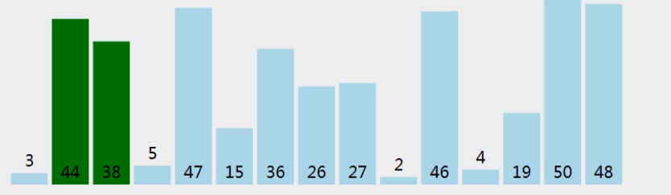

原文出处:本文由博客园博主Andrew.SH提供。
原文连接:https://www.cnblogs.com/qtnt/p/11625529.html
原文连接:https://www.cnblogs.com/qtnt/p/11625529.html
----------------
排序
----------------
冒泡排序思想：
“比较相邻的元素。如果第一个比第二个大,就交换他们两个。 对每一对相邻元素做同样的工作,从开始第一对到结尾的最后一对。在这一点,最后的元素应该会是最大的数。 针对所有的元素重复以上的步骤,除了最后一个。 持续每次对越来越少的元素重复上面的步骤,直到没有任何一对数字需要比较。”

选择排序思想：

该方法实质上是一种分组插入方法。

测试主函数
1 #include <stdio.h>
2 #include<stdlib.h>
3 #include <time.h>
4 #include "sort.h"
5
6
7 int main()
8 {
9 ArrayList numlist;
10 PtArrayList pt_arraylist;
11 pt_arraylist = &numlist;
12 while(True){
13 Init_Data(pt_arraylist);
14 show((char *)"排序前 ", pt_arraylist);
15
16 // BubbleSort_Low(pt_arraylist);
17 // BubbleSort_Mid(pt_arraylist);
18 // BubbleSort_Mid_Opt(pt_arraylist);
19 // SelectSort_Asc(pt_arraylist);
20 // SelectSort_Desc(pt_arraylist);
21 // InsertSort(pt_arraylist);
22 // ShellSort(pt_arraylist);
23 // QuickSort(pt_arraylist, 0, pt_arraylist->len-1);
24 QuickSort_Opt(pt_arraylist, 0, pt_arraylist->len-1);
25 show((char *)"排序后 ", pt_arraylist);
26 }
27
28
29 return 0;
30 }
测试头文件
1 //sort.h
2 #define True 1
3 #define False 0
4 #define NUMSIZE 20
5 typedef struct {
6 int array[NUMSIZE];
7 int len;
8 }ArrayList, *PtArrayList;
9
10 void swap(int * first, int * second);
11 void show(char * info, PtArrayList * pt_arraylist);
12 void Init_Data(PtArrayList pt_arraylist);
13 void BubbleSort_Low(PtArrayList * pt_arraylist);
14 void BubbleSort_Mid(PtArrayList * pt_arraylist);
15 void BubbleSort_Mid_Opt(PtArrayList pt_arraylist);
16 void SelectSort_Asc(PtArrayList pt_arraylist);
17 void SelectSort_Desc(PtArrayList pt_arraylist);
18 void InsertSort(PtArrayList pt_arraylist);
19 void ShellSort(PtArrayList pt_arraylist);
20 int FindPos(PtArrayList pt_arraylist, int low, int high);
21 void QuickSort(PtArrayList pt_arraylist, int low, int high);
22
23 #include "sort_function.cpp"
函数具体实现
1 //sort_function.cpp
2 void Init_Data(PtArrayList pt_arraylist)
3 {
4 char s[] = "请输入不大于20的序列长度";
5 printf("%s___\b\b",s);
6 while(!scanf("%d", &pt_arraylist->len) || (pt_arraylist->len > NUMSIZE))
7 {
8 printf("%s\n",s);
9 if(pt_arraylist->len > NUMSIZE)
10 {
11 printf("当前序列长度为%d 过长\n", pt_arraylist->len);
12 continue;
13 }
14 scanf("%*s");
15 }
16
17 srand(time(0)); //随机初始化rand()函数
18 for(int i=0; i<pt_arraylist->len; i++)
19 {
20 pt_arraylist->array[i] = rand()%200-100;
21 }
22
23 }
24
25 void QuickSort_Opt(PtArrayList pt_arraylist, int low, int high)
26 {
27 //快速排序--尾递归优化
28 int pos;
29 while(low<high)
30 {
31 pos = FindPos(pt_arraylist, low, high);
32 QuickSort(pt_arraylist, low, pos-1);
33 low = pos+1;
34 }
35
36 }
37
38 void QuickSort(PtArrayList pt_arraylist, int low, int high)
39 {
40 //快速排序
41 int pos;
42 if(low<high)
43 {
44 pos = FindPos(pt_arraylist, low, high);
45 QuickSort(pt_arraylist, low, pos-1);
46 QuickSort(pt_arraylist, pos+1, high);
47 }
48
49 }
50
51 int FindPos(PtArrayList pt_arraylist, int low, int high)
52 {
53 if (low > NUMSIZE || low<0)
54 {
55 printf("退出,越界访问\n");
56 return -1;
57 }
58
59 int posval = pt_arraylist->array[low];
60 //降序
61 while(low < high)
62 {
63 //确定pos的同时，对序列进行有序化
64 //=不能少,否则可能low和high永远不能相遇，死循环
65 while(low < high && posval>=pt_arraylist->array[high])
66 high--;
67 swap(&pt_arraylist->array[low], &pt_arraylist->array[high]);
68
69 while(low < high && posval<=pt_arraylist->array[low])
70 low++;
71 swap(&pt_arraylist->array[low], &pt_arraylist->array[high]);
72 }
73
74 return low;
75 }
76
77 void ShellSort(PtArrayList pt_arraylist)
78 {
79 //希尔排序 分组后进行插入排序，分组
80 int i,pos,tmp;
81 int step = pt_arraylist->len;
82
83 do{
84 step /= 2; //step为1时 和插入排序一模一样
85 for(i=step; i<pt_arraylist->len; i++)
86 {
87 tmp = pt_arraylist->array[i];
88 //与当前数据做比较，注意tmp
89 for(pos=i-step; pos>=0 && tmp<pt_arraylist->array[pos];pos-=step)
90 {
91 pt_arraylist->array[pos+step] = pt_arraylist->array[pos];
92 }
93 pt_arraylist->array[pos+step] = tmp;
94 }
95
96 }while(step>=1) ;
97
98 }
99
100 void InsertSort(PtArrayList pt_arraylist)
101 {
102 //直接插入排序
103 int i, pos, tmp;
104 for (i=1; i<pt_arraylist->len; i++)
105 {
106 tmp = pt_arraylist->array[i];//当前值得临时变量 腾出i位置空间
107 //前一个元素比当前大，右移（升序），必须为pos--
108 for(pos = i-1; pos>=0 && pt_arraylist->array[pos]>tmp; pos--)
109 {
110 pt_arraylist->array[pos+1] = pt_arraylist->array[pos]; //右移
111 }
112 //通过pos标记位置,插入到空出来的位置 （不移动则直接插入到i位置）
113 pt_arraylist->array[pos+1] = tmp;
114
115 }
116
117 }
118
119 void SelectSort_Asc(PtArrayList pt_arraylist)
120 {
121 //选择排序，当前数字和其他当中最小的进行交换 (升序)
122 int min;
123 //最后一个数不用再做比较，所以len-1。其实不加在后续条件也不影响
124 for (int i=0; i<pt_arraylist->len-1; i++)
125 {
126 min = i;
127 for (int j=i+1; j<pt_arraylist->len; j++)
128 {
129 //此处min不能为i，筛选出最小的值
130 if(pt_arraylist->array[min] > pt_arraylist->array[j])
131 {
132 min = j;
133 }
134 }
135 if(i!=min)
136 swap(&pt_arraylist->array[i], &pt_arraylist->array[min]);
137 }
138 }
139
140 void SelectSort_Desc(PtArrayList pt_arraylist)
141 {
142 //选择排序，当前数字和其他当中最大的进行交换 (降序)
143 int max;
144 for (int i=0; i<pt_arraylist->len-1; i++)
145 {
146 max = i;
147 for (int j=i+1; j<pt_arraylist->len; j++)
148 {
149 if(pt_arraylist->array[max] < pt_arraylist->array[j])
150 {
151 max = j;
152 }
153 }
154 if(i!=max)
155 swap(&pt_arraylist->array[i], &pt_arraylist->array[max]);
156 }
157 }
158
159 void BubbleSort_Mid_Opt(PtArrayList pt_arraylist)
160 {
161 int flag = True;
162 //改进版
163 for (int i=0; i<pt_arraylist->len && flag; i++)
164 {
165 //只有当第二层循环不出现一次True时，
166 //才会有标志位False
167 flag = False;
168 for (int j=0; j<pt_arraylist->len-i-1; j++)
169 {
170 if(pt_arraylist->array[j] > pt_arraylist->array[j+1])
171 {
172 swap(&pt_arraylist->array[j], &pt_arraylist->array[j+1]);
173 flag = True;
174 }
175 }
176 }
177 }
178
179 void BubbleSort_Mid(PtArrayList pt_arraylist)
180 {
181 //对当前数字和其下一个相邻数字比较，大于则交换
182 //冒泡到最后一个数肯定是最大的，所以不需要比较，即len-1-i
183 //i进行一次表明有i个数字已经排好
184 for (int i=0; i<pt_arraylist->len; i++)
185 {
186 for (int j=0; j<pt_arraylist->len-i-1; j++)
187 {
188 if(pt_arraylist->array[j] > pt_arraylist->array[j+1])
189 swap(&pt_arraylist->array[j], &pt_arraylist->array[j+1]);
190 // printf("num[%d] = %d num[%d] = %d\n", j, pt_arraylist->array[j], j+1, pt_arraylist->array[j+1]);
191 }
192 }
193 }
194
195 void BubbleSort_Low(PtArrayList pt_arraylist)
196 {
197 //依次将数字位与后续其他位比较，升序，大则交换
198 for (int i=0; i<pt_arraylist->len; i++)
199 {
200 for (int j=i+1; j<pt_arraylist->len; j++)
201 {
202 if(pt_arraylist->array[i] > pt_arraylist->array[j])
203 swap(&pt_arraylist->array[i], &pt_arraylist->array[j]);
204 }
205 }
206 }
207
208 void show(char info[], PtArrayList pt_arraylist)
209 {
210 printf("%s", info);
211 for (int i=0; i<pt_arraylist->len; i++)
212 {
213 printf("%3d ", pt_arraylist->array[i]);
214 }
215 putchar('\n');
216 }
217
218 void swap(int * first, int * second)
219 {
220 int tmp;
221 tmp = *first;
222 *first = *second;
223 *second = tmp;
224
225 }